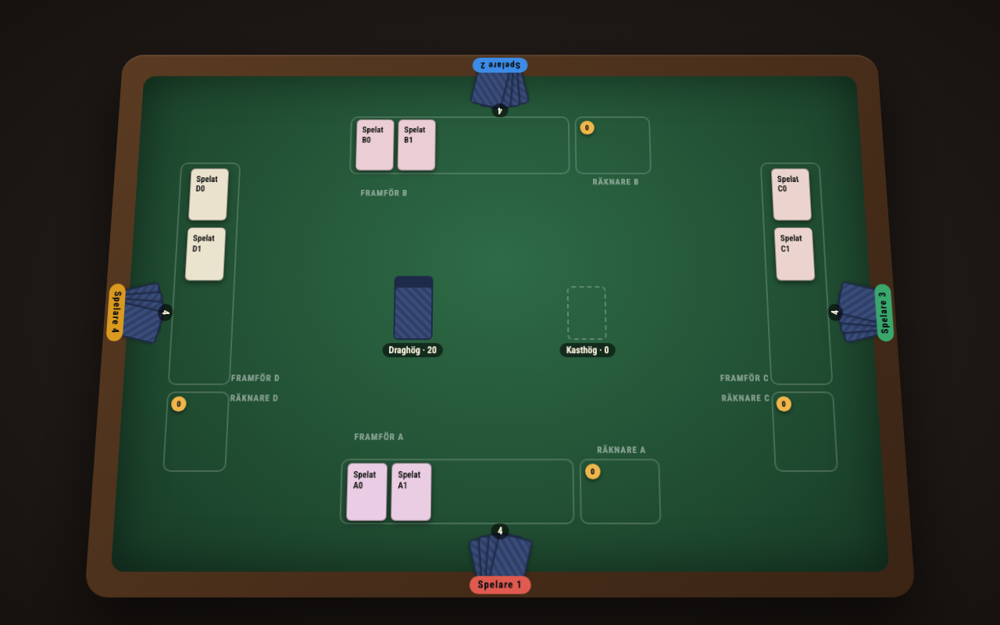
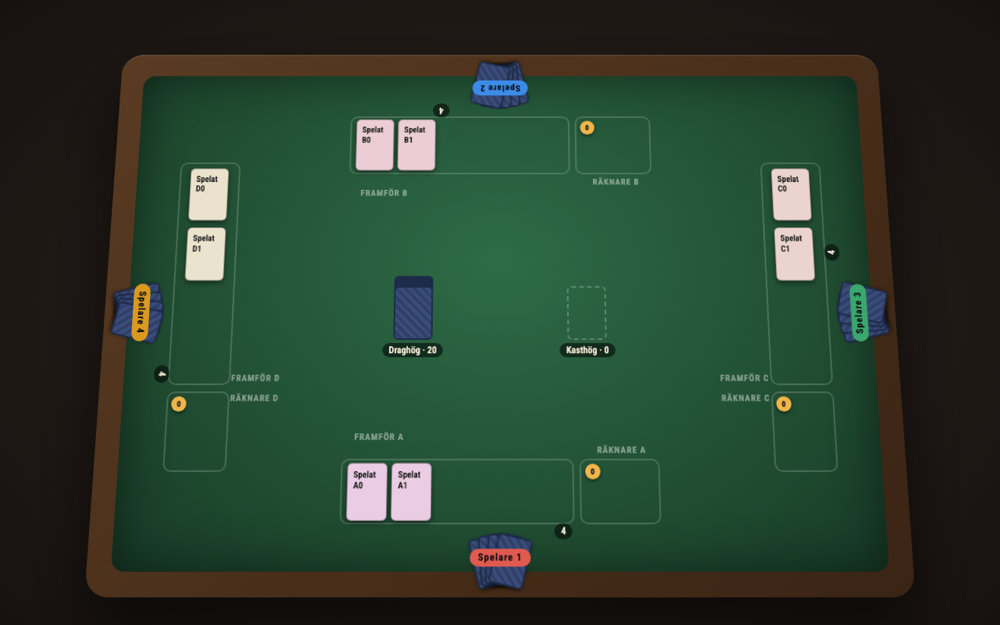

Frågan. Förslag A lägger handens antalsbricka mot handzonens inre linje, mitt för platsen. Platsnamnet ligger i samma remsas andra ände, också mitt för platsen. Remsan är 60–75 mm djup (K18) — ungefär 41 px på skärmen — och namnet är 23 px, brickan 20. De får inte plats. Vilken väg ut går fri?
Hur det är mätt. Med repots egen läsning: READ och NAME_MARGIN ur packages/web/test/felt-labels.ts, samma 15 %-marginal som felt-names.test.tsx fäller på, på produktens egen TableRenderer med de ark som skeppas — och genom samma renderingsväg som grinden använder. Vid 2–8 platser och alla fyra vridningar: 28 scener per väg. Harnesset ligger i packages/web/test/proto-413.test.tsx på den här grenen.
| Väg | Krockar (av 28) | Vad som krockar |
|---|---|---|
| A · som beslutat | 22 | brickan × platsnamnet, vid varje plats |
| A + namnet ut ur remsan | inga | — |
| A + brickan längs kanten | inga | — |
| i dag / #427 · brickan utåt | inga | — |
Kortets storlek står utanför den här mätningen. Harnesset ritar filten i en given ruta utan kamera, så alla fyra ger 51,0 px. Vad #427 kostar — 2,9 % av kortsidan — mättes i den prototyp som ledde fram till beslutet och gäller fortfarande.


A + namnet ut ur remsan. Den behåller förslag A oförändrat — brickan mitt för platsen på den inre linjen, stillastående när handen växer, noll kostnad för filten — och tar bort krocken vid dess verkliga orsak: det är platsnamnet som ligger inne i handens remsa, ovanpå korten.
Den andra rena vägen, brickan längs kanten, betalar med att brickan inte längre hör ihop med någon fläkt, och den börjar likna den avvisade varianten B.
Men det är ett beslut och inte ett bygge: att flytta platsnamnet ut på träramen rör C5:s namnkortsgeometri, som just reviderats i #418 vad gäller namnets riktning. Väntar på beställaren.